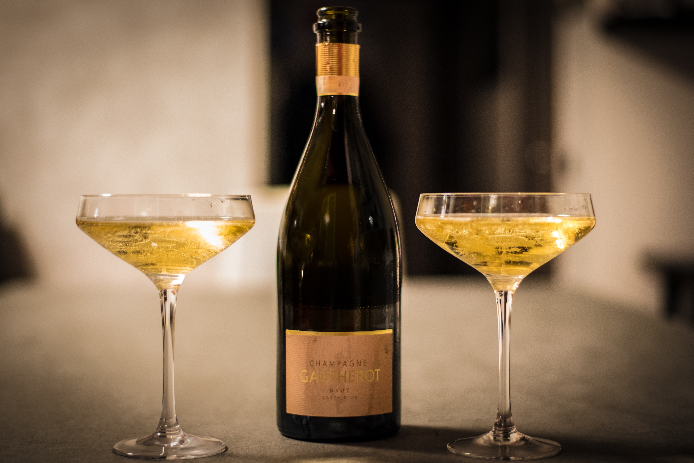

칵테일 글라스 : 역삼각형으로 발레리나의 모습을 본떠 만든 글라스이다.
칵테일 글라스 : 역삼각형으로 발레리나의 모습을 본떠 만든 글라스이다. 샴페인 글라스 : 플루트 형
샴페인 글라스 : 플루트 형샴페인 글라스 : 소서형
 사워 글라스 : 위스키 사워 등 주로 사워 칵테일에 사용된다.
사워 글라스 : 위스키 사워 등 주로 사워 칵테일에 사용된다. 리큐어 글라스 : 코디얼 글라스라고도 한다.
리큐어 글라스 : 코디얼 글라스라고도 한다. 와인 글라스 : 레드 와인과 화이트 와인 글라스가 있다.
와인 글라스 : 레드 와인과 화이트 와인 글라스가 있다. 샷 글라스 : 용량은 1~2oz로 위스키 글라스, 스트레이트 글라스라고도 한다.
샷 글라스 : 용량은 1~2oz로 위스키 글라스, 스트레이트 글라스라고도 한다. 올드 패션드 글라스 : 온더락스 글라스라고도 한다.
올드 패션드 글라스 : 온더락스 글라스라고도 한다. 하이볼 글라스 : 8~10oz의 텀블러 글라스로 Gin & Tonic 등에 사용한다.
하이볼 글라스 : 8~10oz의 텀블러 글라스로 Gin & Tonic 등에 사용한다. 콜린스 글라스 : 보통 12oz 이상의 글라스로 톨 하이볼 이라고도 한다.
콜린스 글라스 : 보통 12oz 이상의 글라스로 톨 하이볼 이라고도 한다. 브랜디 글라스 : 스니프터 라고도 한다.
브랜디 글라스 : 스니프터 라고도 한다. 고블렛 글라스 : 주로 고객에게 물을 제공할 때 사용한다.
고블렛 글라스 : 주로 고객에게 물을 제공할 때 사용한다. 필스너 글라스 : 윈래는 체코의 "필슨"이라는 회사에서 만든 맥주잔이다.
필스너 글라스 : 윈래는 체코의 "필슨"이라는 회사에서 만든 맥주잔이다. 아이리시 커피 글라스 : 아이리시 커피 등에 사용한다.
아이리시 커피 글라스 : 아이리시 커피 등에 사용한다. 셰리 와인 글라스 : 셰리 와인을 마실 때나 B-52 등에 사용한다.
셰리 와인 글라스 : 셰리 와인을 마실 때나 B-52 등에 사용한다.